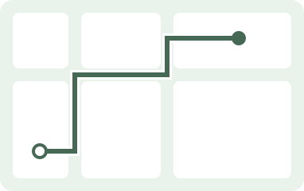

나에게 편한 길

18분 1.1km
이 길은 이런 길이에요
- 계단 없이 갈 수 있어요
-
 경사가 비교적 완만해요 · 최대 4%
경사가 비교적 완만해요 · 최대 4%
-
 횡단 3회가 있어요
횡단 3회가 있어요
기울기 이해를 돕는 설명용 그림이에요.
경사 정보 일부 미확인
- 일부 구간은 고도 데이터가 충분하지 않아 경사 정보를 제공하지 못할 수 있습니다.
정보 미확인은 경사가 없다는 뜻이 아니에요. 확인된 정보와 함께 경로를 살펴보세요.
이 경로를 선택했어요